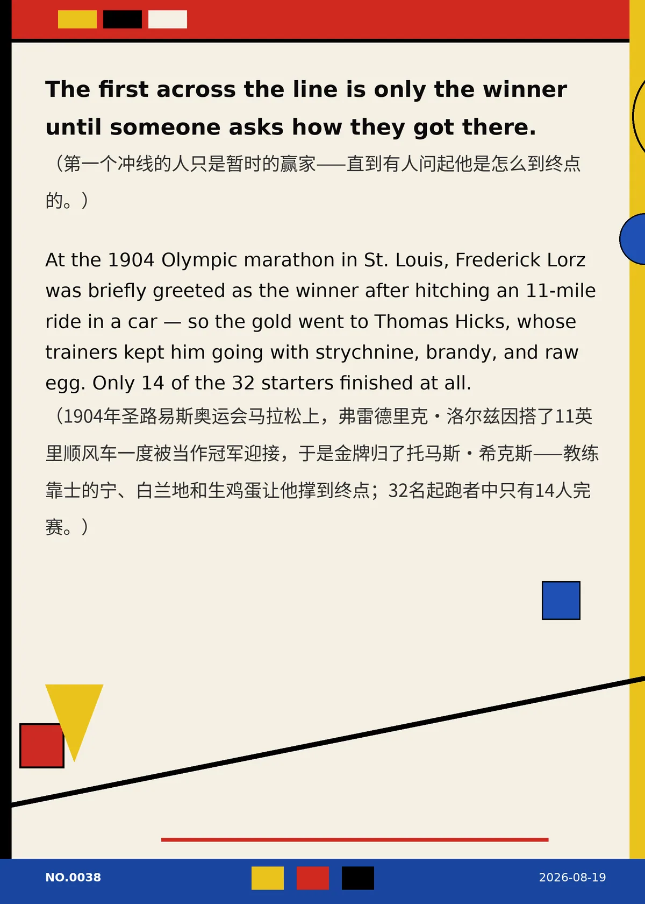

The first across the line is only the winner until someone asks how they got there. （第一个冲线的人只是暂时的赢家——直到有人问起他是怎么到终点的。）
At the 1904 Olympic marathon in St. Louis, Frederick Lorz was briefly greeted as the winner after hitching an 11-mile ride in a car — so the gold went to Thomas Hicks, whose trainers kept him going with strychnine, brandy, and raw egg. Only 14 of the 32 starters finished at all. （1904年圣路易斯奥运会马拉松上，弗雷德里克·洛尔兹因搭了11英里顺风车一度被当作冠军迎接，于是金牌归了托马斯·希克斯——教练靠士的宁、白兰地和生鸡蛋让他撑到终点；32名起跑者中只有14人完赛。）
f58cbe21bf3bad77冷知识由执笔的模型自行查证。逐条断言、来源与所引原句存档在纯文字副本里，未经程序逐字校验，留作事后核实。